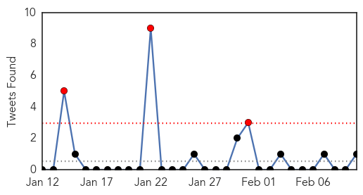
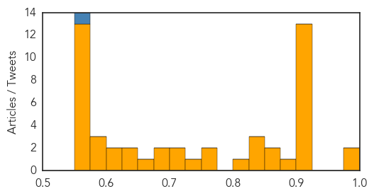

Toggle navigation
Early Warning
Daily Alerts
Unknown
Feb 10, 2014
30 Day Trends
Web: 1
alerts
, 10
warnings
Twitter: 2
alerts
, 0
warnings
Top Articles:
Showing top 50 articles...
0.987
Flu Season; Obese Make Up Over 40 Percent Of Hospital Visits (LINK)
0.987
Hospital to 18 people: You may have been exposed to Creutzfeldt-Jakob
0.917
Chicago Tribune
0.917
Chicago Tribune
0.917
Chicago Tribune
0.917
Chicago Tribune
0.917
Chicago Tribune
0.917
Chicago Tribune
0.917
Chicago Tribune
0.917
Chicago Tribune
0.917
Chicago Tribune
0.917
Chicago Tribune
0.917
Chicago Tribune
0.917
Chicago Tribune
0.917
Chicago Tribune
0.889
Chinese health officials report eleven H7N9 bird flu cases
0.866
Red Cross says vehicle carrying five disappears in northern Mali
0.866
Syria mediator Brahimi to meet U.S. and Russian ministers on Friday -UN
0.845
Khartoum blamed as hysteria hits Darfur schools - News
0.834
Number of confirmed H7N9 cases hits 200 since October
0.830
S. Sulawesi takes action to reduce spread of anthrax
0.820
Pig virus found in Lambton County
0.766
Kabul records first polio case since 2001
0.752
NZ may not have seen last of neurological form of EHV-1
0.728
Patients Resolving to Maintain Oral Health in the New Year Can Receive Periodontal Treatment in Williamsburg, VA from Dr. Michael Schroer
0.719
Experimental flu treatment study being conducted in Wichita
0.719
Scientists develop potential new drug treatment to tackle viruses
0.693
Norovirus Shuts Down Historic New York State Resort
0.684
Could a cure for the common cold be in sight?
0.661
Syphilis cases rising rapidly
0.641
Should flu shots be mandatory?
0.626
Continental rachète Veyance à Carlyle pour 1,4 milliard d'euros
0.615
Ministry of Health orders closures, imposes fines on private health institutions violating laws
0.600
CFIA probes link between feed and deadly pig virus
0.585
AGRIBUSINESS: PEDV Test Breakthrough
0.576
Iran, a destination for Islamic medical tourists
0.575
US rebuff of 'socialized medicine' baffles world health leaders (Includes interview and first-hand account)
0.569
Virus killing 5 million pigs spurs hog-price rally
0.567
Iran gradually becoming prime destination for Muslim medical tourists
0.564
Having surgery? Many things patients are told to do aren’t necessary and can be harmful
0.563
EHR-based screening program for AAA cuts the number of at-risk men by more than half
0.558
Hollande and Obama honour Franco-American bond at Jefferson home
0.558
China and Taiwan hold landmark talks
0.558
Mass taxi strike strands Paris commuters, tourists
0.558
New round of Syrian peace talks under way in Geneva
0.558
Homs ceasefire extended as Syria peace talks continue
0.558
Swiss immigration vote angers EU, vindicates far-right
0.558
Indian student’s extrajudicial killing case shakes up the system
0.558
Gang of suspected French wine thieves arrested
0.558
In pictures: River Thames bursts its banks near London
Top Tweets:
0.709
Antibiotics are not effective against viral infections like the flu. Learn what you can do if you have the flu: http://t.co/7KUUl2hSI4
0.682
Need flu vaccine info for older adults? Read the following article from one of our flu vaccination partners. http://t.co/X1uoWvkWcE
Web/News Articles
Tweets

Article Locations
Article Confidences
